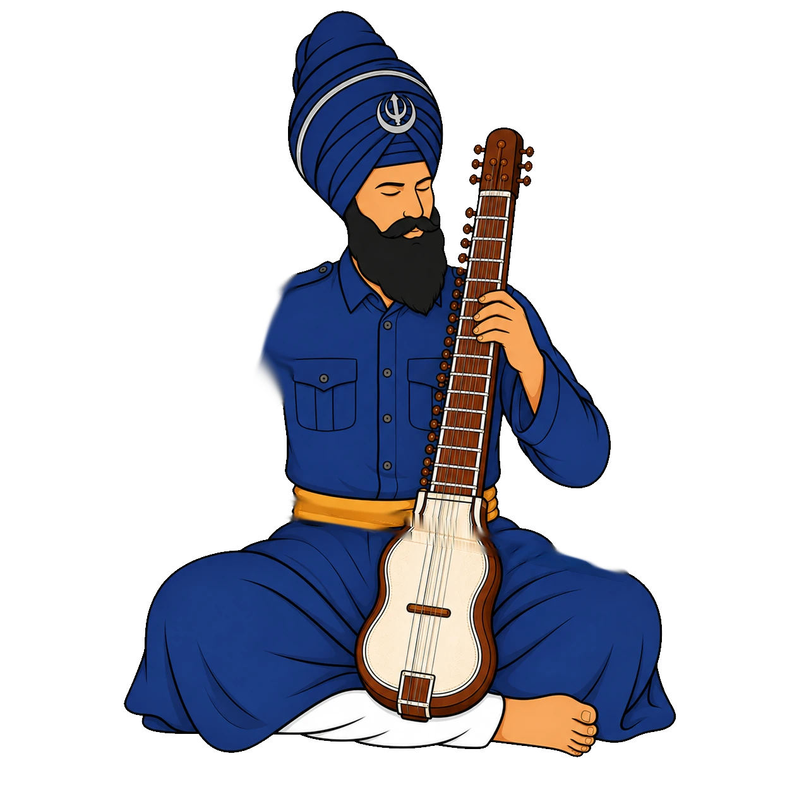
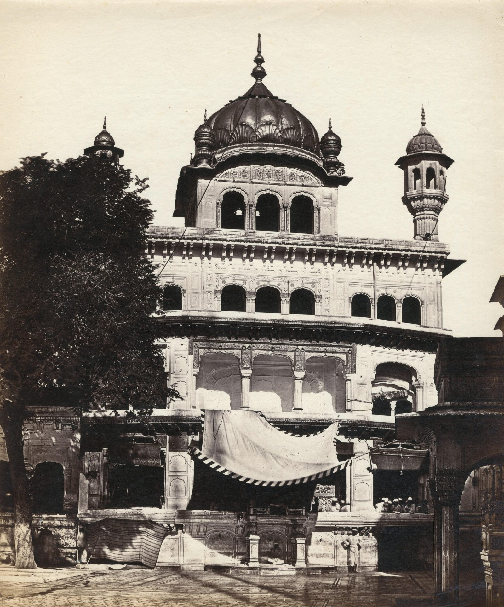
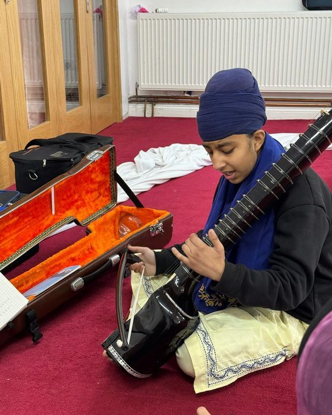

Santhiya
SanthiyaVidyala · 01
The fresco of Bhai Gurdas Ji opens from its arch to fill the screen; four promises travel sideways.

KirtanVidyala · 02
The animated dilruba in its arch, the gaj following the cursor; the four saaj; the nine-class week with the next class worked out live.
Akhara · 03
Scroll draws the bow and looses the arrow; the target zooms ring by ring through stance, breath, focus, release, mastery.

ClassesAll six
The Akal Bunga, 1858. Large rows for each vidyala, the picture following the cursor.
 About
AboutThe charity
Sri Harmandir Sahib, 1858, opening to the full width; the four purposes; the register's figures.

DonateSupport
The bank details on a navy plate, each line copyable; seva in kind.
 Contact
ContactCome and find us
WhatsApp and email as large lines; the two gurdware as cards.
 Gallery
Gallery81 photographs
Filters that slide the tiles into place; a full-screen viewer with arrow keys.
 Resources
ResourcesGranths & talks
The calendar card; one search across every granth and talk; a contents list that follows you.
 Safeguarding
SafeguardingRaising a concern
999 first, in red; every number a tap-to-call card.
PrivacyThe notice
Updated for the light/dark switch, with a button to forget the setting.